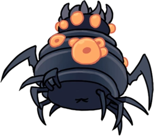
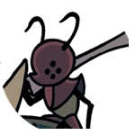
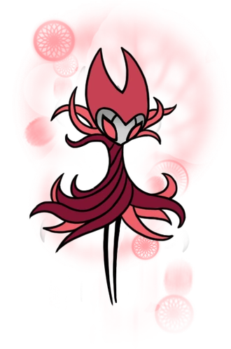

Chefes

Receptáculo Quebrado
O Receptáculo Quebrado é um dos chefes de Hollow Knight. Ele bloqueia o caminho para obter as Asas do Monarca. Parente Perdido é sua variação dos sonhos.
O Receptáculo Quebrado é um dos vários receptáculos criados pelo Rei pálido para conter a infecção, e que foram descartados no Abismo. Apesar disso, ele conseguiu fugir do abismo. Porém, diferente de nosso jogador, ele não teve muito sucesso e acabou morrendo na Bacia Antiga em algum momento da sua jornada. Sua carcaça foi abandonada em uma caverna e a infecção tomou conta de seu corpo morto.
| Vida | 525 |
Mawlek Incubador
O Mawlek Incubador é um chefe secreto em Hollow Knight, assim como um mini-chefe em Coliseu dos Tolos. É preciso derrotá-lo uma vez para desbloquear sua entrada no Diário.
Um solitário Mawlek Incubador pode ser encontrado fora do caminho na Encruzilhada Esquecida, longe do seu irmão vivo na Bacia Antiga. Ele fica em meio a restos fossilizados de seus parentes, pedindo que reproduzam. Essa besta selvagem foi conduzida tanto pela solidão quanto pela Infecção que começou cobrindo seu corpo com bulbos. Ele ataca O Cavaleiro logo quando ele entra a sala, pulando no chão. Após derrotá-lo, a Infecção explode Mawlek.
| Vida | 300 |
Guardião Cristalizado

O Guardião Cristalizado é um chefe opcional em Hollow Knight. O Guardião Enfurecido é sua segunda forma, mais forte e rápida. Ambas as formas precisam ser derrotadas para desbloquear sua entrada no Diário.
O Guardião Cristalizado faz parte dos mineradores do Pico de Cristal que morreram pela Infecção e foram reanimados por ela.Ele parece maior do que as outras carcaças, tem cristais crescendo em suas costas e envolvendo seus braços e sua cabeça. Ele também tem mais domínio sobre a luz do cristal do que as Carcaças Cristalizadas.
Enquanto envolto em cristal, o Guardião grita de forma semelhante à Radiância embora em um tom mais alto. Ao ficar limpo do cristal, ele tem uma voz normal de inseto. Assim como as outras carcaças de mineradores, ele é obcecado pela luz, mas está cansado demais para minerá-la implacavelmente como eles fazem.
| Vida | 280 |
Defensor do Esterco
O Defensor do Esterco é um dos principais Chefes em Hollow Knight. Este campeão do passado defende o acesso ao Bosque de Isma.Defensor Branco é sua variante dos sonhos.
O Defensor do Esterco costumava ser conhecido como Ogrim, o mais leal dos Cinco Grandes Cavaleiros de Hallownest.Como tal, ele participou de muitas batalhas e aventuras.Ele também era igualmente famoso por seu mau cheiro, embora isso não o impedisse de desfrutar da companhia da Dama Branca e seus companheiros cavaleiros.Ele gostava particularmente da cavaleira Isma.
Ogrim sobreviveu a Infecção mas se isolou em uma parte da Hidrovia Real onde o lixo se acumula. Lá, como o Defensor do Esterco, ele guarda o controle da bomba que permite a entrada ao Bosque de Isma no outro lado dos esgotos. O Defensor do Esterco desafia qualquer um que entrar no local para desafiá-lo.Ele também passa o tempo rolando esterco aos arredores e moldando estátuas com ele.
O Defensor do Esterco parece não saber do destino do seu Rei e dos outros cavaleiros. Em seu isolamento, ele se ilude pensando que eles retornarão e que Hallownest pode renascer.
| Vida | 700 / 750 / 800 / 850 / 900 (Ferrão nível 0/1/2/3/4) |
Falso Cavaleiro
Falso Cavaleiro é um dos chefes principais em Hollow Knight. Ele mantém o Brasão da Cidade necessário para abrir os portões da Cidade das Lágrimas. O Campeão Fracassado é sua forma do Mundo dos Sonhos mais rápida e mais forte.
Falso Cavaleiro é um Verme vestindo a armadura de Hegemol, um dos Cinco Cavaleiros Reais de Hallownest. Esta criatura fraca queria encontrar meios de proteger seus irmãos que vivem em um depósito abandonado no meio da Encruzilhada Esquecida. Quando ele descobriu Hegemol dormindo em sua concha blindada, ele a pegou para si, esperando pela grande força que usar a armadura parecia prometer. Mesmo que a loucura não o tenha levado a fazer isso, o Falso Cavaleiro acabou caindo nas mãos da Infecção.
| Vida | 65 (Armadura) 40 (Verme)/ Necessário para matar: 3 fases da armadura (65x3) + 4 fases do Verme (40x4) = 355 |
Flukemarm

Flukemarm chefe escondido em Hollow Knight. Derrotá-la concede um novo Amuleto, o Ninho de Flukes.
Flukemarm é a mãe de todos os Flukes que infestam a Hidrovia Real.Seu corpo é usado como um ninho para Flukefeys jovens.Assim como seus filhos, ela foi Infectada e hostilizada, embora sua condição de reprodutora a impeça de sair de sua caverna.
| Vida | 350 |
Domador de Deuses
A Domadora de deuses é uma chefe em Hollow Knight. Ela fica no topo do caminho do Tolo.(sendo o boss final)
A Domadora de Deuses é uma guerreira veterana do Coliseu dos Tolos, tomando o lugar de chefe do último e mais brutal julgamento. Ela compensa por sua pequena estatura com a força de sua Besta domesticada, ao lado da qual ela luta. Ambos apresentam sinais da Infecção
| Vida | tamer:600/Besta:450 total:1050 |
Mãe Mosca

Mãe Mosca é um mini-chefe opcional em Hollow Knight. Ela também é uma chefe dupla do Coliseu dos Tolos. Desbloquear sua entrada no Diário requer derrotar 3 Mães Mosca.
| Vida | 90 |
Cavaleiro Vazio
O Cavaleiro Vazio é um dos principais Chefes de Hollow Knight. Ele é o centro da jornada do Cavaleiro e da história de Hallownest.Receptáculo Puro é sua forma não-infectada.
O Cavaleiro Vazio é um Receptáculo escolhido pelo Rei Pálido para selar a Radiância e salvar Hallownest da Infecção.Como seus irmãos, ele era um filho do Rei e da Rainha de Hallownest, nascido no Abismo e preenchido com o poder do Vazio. Sendo assim, nenhum deles tem gênero.A condição desse nascimento consequentemente os deixaria sem mente, vontade ou voz, para prevenir que A Radiância não os influenciasse.No entanto, sua pureza foi mal avaliada, manchada por uma ideia instintiva, o laço com o Rei Pálido, aquele que os criou.
Independente de sua impureza, o Cavaleiro Vazio foi treinado e criado, eventualmente se tornando um Receptáculo adulto.A Radiância foi selada dentro dele, e o mesmo foi acorrentado dentro do Templo do Ovo Negro, onde era esperada a contenção da Infecção por toda a eternidade.Contudo, por causa das impurezas mencionadas anteriormente, A Radiância ainda poderia exercer influência sobre o receptáculo. No fim, isso resultou no ressurgimento da Infecção e na queda do Reino em ruínas. Conforme o tempo passou, o Cavaleiro Vazio desapareceu da memória do Reino caído. Apenas o memorial no meio da Cidade das Lágrimas registrava seu sacrifício para salvar Hallownest.
Depois de algum tempo, o poder da Radiância quebrou o Cavaleiro Vazio, rompendo sua casca e o infectando totalmente.Esse evento foi o catalizador que trouxe O Cavaleiro de volta para Hallownest.O Cavaleiro pode libertar e lutar contra o Cavaleiro Vazio após libertar os três Sonhadores os quais mantinham o selo da entrada do Ovo Negro.
| Vida | Fase 1-3 respectivamente: 250/350/400 Total: 1000 +250 (Cura na quarta fase) Final total: 1250 |
Lordes Louva-a-Deus
Os Lordes Louva-a-Deus são um chefe opcional em Hollow Knight. Derrotá-las permite a passagem segura pela Tribo Louva-a-Deus. As Irmãs da Batalha são sua forma mais forte.
As Lordes Louva-a-Deus são três irmãs que comandam a Tribo-Louva-a-Deus nas profundezas dos Ermos Fúngicos.Eles conseguiram resistir à Infecção durante a queda de Hallownest,exceto o irmão e seus seguidores, que escolheram aceitar a Infecção voluntariamente.
Com base em sua regra, os Lordes manteram as bestas do Ninho Profundo confinadas em seu território, matando aqueles quem tentassem invadir a vila.Essa dívida é parte de uma trégua com o Reino, mantida mesmo após o declínio do reino.Os Lordes Louva-a-Deus assim como toda a tribo, são reconhecidos como orgulhosos guerreiros. Eles irão garantir a passagem para o Ninho Profundo para qualquer um que se prove capaz de vencê-los em um desafio justo, em uma arena improvisada na sua sala do trono.
| Vida | Primeira fase: 210 Segunda fase: 160 + 160 = 320 Total: 530 |
Nosk
Nosk é um chefe escondido em Hollow Knight. Sua derrota é recompensada por um dos raros Minérios Pálidos.Nosk Alado é sua forma voadora.
Nosk é uma besta Infectada misteriosa e metamórfica caçando no Ninho Profundo.Ele pode imitar a forma de rostos que encontra nas memórias de insetos, geralmente entes queridos ou falecidos, e pode contorcer seu corpo para assumir uma moldura menor.Ele pendura suas presas, incluindo Escavadores, um Devoto Espreitador, e vários Receptáculos, no teto do seu covil no fundo do Ninho Profundo.
| Vida | 680 |
Mestre das Almas

Mestre das Almas é um chefe principal em Hollow Knight. Derrotá-lo concede a Magia Mergulho Desolador. O Tirano das Almas é a sua variante dos sonhos.
O Mestre das Almas é o líder do Santuário das Almas de Hallownest, que procurou maneiras de expandir as mentes dos insetos e atingir o foco puro. Quando a Infecção começou, ele chegou à conclusão de que ALMA, a energia que anima insetos e bestas, era a solução para curar as suas mentes dessa praga.Ele se recusou a ouvir o Rei Pálido se opondo ao seu trabalho, e não pôde perceber que a sua própria mente Infectada estava o influenciando.
O Mestre das Almas acumulou Alma e a consumiu, eventualmente ganhando novos poderes de Alma.Ele reuniu Totens de Alma no Santuário e drenou muitos insetos desafortunados de sua energia vital. Ao contrário do resto dos habitantes do Reino, ele e seus seguidores conseguiram sobreviver à Infecção. No entanto, ele foi levado à obsessão em sua busca pela imortalidade e perdeu a sua sanidade ao tentar se aproximar da luz que o guiava em sua mente.
| Vida | 275 (Primeira Fase) 110 (Segunda Fase) Total: 385 |
O Colecionador

O Colecionador é um chefe escondido em Hollow Knight. Derrotá-lo concede o Mapa do Colecionador.
O Colecionador é uma criatura feita de Vazio. Ele vive escondido na Torre do Amor trancado junto com uma grande coleção de insetos de toda Hallownest que são preservados, vivos ou mortos, em jarras de vidro.
Embora sempre exibindo uma atitude alegre, o Colecionador se preocupa apenas com a preservação de outras criaturas.Ele prendeu as Larvas de sua colônia na Encruzilhada Esquecida e registrou as suas localizações em Hallownest em um mapa.Apesar de sua atenção às Larvas, ele tem apenas três em sua torre. Ele também tem uma conexão com o proprietário anterior da chave da torre, um inseto aristocrata de Hallownest que pode ser encontrado morto nas profundezas dos Jardins da Rainha.
| Vida | 750/750/750/800/850 (Ferrão: 0/1/2/3/4) |
A Radiância
A Radiância é um chefe secreto em Hollow Knight. Radiância Absoluta é sua forma perfeita que é encontrada no topo do panteão de Hallownest.
A Radiância é um ser superiorde luz semelhante à Essência e, como tal, oposto ao Vazio, seu antigo inimigo.A Tribo das Mariposas nasceu de sua luz e em troca a reverenciou.
| Vida | Fases 1/2/3/4 respectivamente: 350/400/250/700 Total: 1700 |
Lorde Traidor

O Lorde Traidor é um chefe principal em Hollow Knight. Ele bloqueia o caminho para a Dama Branca nos Jardins da Rainha.
O Lorde Traidor foi um dos líderes da Tribo Louva-a-Deus, junto de suas irmãs, além de ser particularmente ressentido a respeito de Hallownest.De forma semelhante, ele desaprovava o relacionamento de sua filha com a Pranteadora Cinzenta, por ela ser um ser de fora.
Em algum momento, ele e seus seguidores abraçaram a Infecção para se tornarem mais fortes e foram expulsos da Vila Louva-a-Deus.Eventualmente, eles chegaram e se estabeleceram nos Jardins da Rainha. Eles procuravam assumir os jardins para eles próprios e perseguir a Dama Branca para fora do seu refúgio mas foram impedidos por sua protetora, a cavaleira Dryya.Apesar deste fracasso, o Lorde Traidor e os outros Louva-a-Deus exilados ainda ficaram nos jardins, agora guiados apenas por um instinto violento e territorial.
A filha do Lorde Traidor, em algum momento morreu. A sua cova pode ser encontrada nos Jardins da Rainha, logo acima da Estação de Besouro, em uma caverna tomada por vinhas. A sua cova também pode ser vista no fundo da arena do Lorde Traidor no Lar dos Deuses.
| Vida | 800 |
Uumuu
Uumuu é um ser inteligente, porém Infectado, semelhante aos Uomas e Oomas que infestam o Cânion da Névoa.É responsável por defender a câmara de Monomon no coração dos Arquivos da Professora.
Uumuu surge subitamente da piscina de ácido na sala que precede a câmara interna assim que o Cavaleiro chegar nela. Durante a luta, Quirrel intervém para atacar Uumuu com o seu ferrão e quebrar a sua defesa gelatinosa, expondo seu núcleo. Uma vez derrotado, a Infecção irrompe para fora de Uumuu antes de explodir.
| Vida | 300 |
Cavaleiros Vigilantes
Os Cavaleiros Vigilantes são um único chefe principal em Hollow Knight . Eles guardam Lurien the Watcher,um dos três Sonhadores A entrada no Diário é desbloqueada no final da luta, independentemente de quantos foram.
Os Cavaleiros Vigilantes costumavam defender a entrada do Pináculo do Observador e o corpo adormecido de Lurien.Eles acabaram morrendo enquanto montavam guarda, deixando suas conchas para trás.
| Vida | 6 x 220/220/220/240/260 Total: 1320/1320/1320/1440/1560 (Ferrão 0/1/2/3/4) |
Guerreiros dos Sonhos

Ancião Hu
Ancião Hu é um chefe Guerreiro dos Sonhos em Hollow Knight.
Ancião Hu era um sábio viajante que procurou purificar as fronteiras de Hallownest da Infecção.Ele alcançou a Vila Louva-a-Deus, mas sua própria mente Infectada o fez ver os Lordes Louva-a-Deus e a Tribo como afligidos pela praga.Os Louva-a-Deus o mataram depois que ele os atacou.Um memorial foi erguido em seu nome acima dos portões da Cidade das Lágrimas, com sua túnica e colar de contas repousando sobre o memorial.
| Vida | 250/420/550/600/650 (Melhorias no Ferrão 0/1/2/3/4) |
Galien
Galien é um Chefe Guerreiro dos Sonhos em Hollow Knight
alien era um guerreiro corajoso e invicto que dizia ser o mais forte em Hallownest e desejava provar seu valor ao Rei Pálido como um Cavaleiro. Ele viajou para Ninho Profundo para testar sua força, mas acabou encontrando a morte. Sua casca está em uma caverna cheia de cogumelos brilhantes incomumente grandes abaixo da Linha de Bonde Inacabada em Ninho Profundo.
| Vida | 230/368/479/570/640 ( Atualizações de Ferrão 0/1/2/3/4) |
Gorb

Gorb é um chefe do Guerreiro dos Sonhos em Hollow Knight .
Gorb, a Grande Mente, era uma criatura mística com um cérebro distendido que afirmava ser onisciente.Eles incitaram os outros a reverenciar sua mente e ascender com eles a um plano diferente de existência.Seus restos mortais foram enterrados em uma colina no topo de Howling Cliffs , com uma lápide esculpida em sua imagem.
| Vida | 200/320/416/500/570 ( Atualizações de Ferrão 0/1/2/3/4) |
Markoth
Markoth é um chefe do Guerreiro dos Sonhos em Hollow Knight .
Markoth foi a única mariposa a carregar uma arma além de Thistlewind .Ele foi para Borda do Reinopara se isolar e meditar,na esperança de descobrir uma verdade há muito esquecida.Markoth lutou contra qualquer um que o ameaçasse, independentemente de suas razões.Ele finalmente morreu, seus restos mortais nunca foram encontrados, em uma caverna solitária na Borda do Reino.
| Vida | 250/400/520/624/705 ( Atualizações de Ferrão 0/1/2/3/4) |
Marmu

Marmu é um chefe do Guerreiro dos Sonhos em Hollow Knight .
Marmu foi uma protetora inocente, porém forte, dos Jardins da Rainha.A Rainha prometeu ensiná-la a como voar quando retornasse ao seu retiro verdejante.Marmu faleceu antes desse dia, e um totem em sua memória foi erguido em seu túmulo nos confins do jardim.
| Vida | 200/320/416/500/570 (Ferrão nível 0/1/2/3/4) |
Sem Olhos
Sem olhos é um chefe do Guerreiro dos Sonhos em Hollow Knight .
Sem olhos era um guerreiro de Hallownest que caiu para a infecção . Ela não conseguia dormir sabendo que os sonhos iriam infectar sua mente com a luz.Para proteger a si mesma e a outros insetos, ela arrancou os olhos deles e os dela antes de sucumbir.Ela foi colocada para descansar no Santuário de Pedra , um lugar em completa escuridão, e uma estátua esculpida foi colocada sobre seu túmulo.
| Vida | 200/320/416/500/570 (Atualizações de Ferrão 0/1/2/3/4) |
Xero
Xero é um chefe do Guerreiro dos Sonhos em Hollow Knight .
Xero era um guerreiro de Hallownest que acreditava que a força sempre lhe permitiria um futuro brilhante.Quando sua mente foi infectada , ele esperava lutar contra a praga com violência Alimentado pela mesma esperança, ele se voltou contra o Rei Pálido , pelo qual foi executado.Xero foi enterrado nos Campos de Descanso , sua tumba um lembrete para qualquer um que traísse o Rei.Quando seu espírito acordou, ele ainda não conseguia ver o erro de suas ações e, em vez disso, acreditava que sua morte era o resultado de um destino condenado.
| Vida | 200/320/416/500/570 (Atualizações de Ferrão 0/1/2/3/4) |
Variações de Chefes dos Sonhos
Campeão Fracassado

Campeão Fracassado é um chefe escondido em Hollow Knight. Ele é a variante dos Sonhos do Falso Cavaleiro, sendo mais forte e ágil do que o seu equivalente físico.
| Vida | 360 (Armadura) 40 (Verme), 60 no primeiro atordoamento/ Total mínimo para matar: 3 fases de armadura (360x3) + 4 fases da cabeça (60 e 40x3) = 1260 |
Parente Perdido
Parente Perdido é um chefe oculto em Hollow Knight . É a variante Sonhador do Receptaculo Quebrado , mais rápido e resistente do que sua contraparte física.
| Vida | 1200 |
Tirano das Almas

O Tirano das Almas é um chefe oculto em Hollow Knight. É a variante dos sonhos do Mestre das Almas, mais rápido e mais resistente do que sua contraparte física.
| Vida | 900 (Primeira Fase) 350 (Segunda Fase) Total: 1250 |
Conteúdo de Trupe Grimm
Grimm
| Vida | 1000 |
Rei do Pesadelo
Rei do Pesadelo Grimm é o chefe final opcional de The Grimm Troupe em Hollow Knight . Ele é a forma dos sonhos do Trupe Master Grimm . Desbloquear sua entrada no Diário requer derrotá-lo em Dirtmouth . Embora ele possa ser combatido no conteúdo Godmaster Panteão de Hallownest e no conteúdo Godmaster Salão dos Deuses , derrotá-lo lá não desbloqueia sua entrada no Diário. Isso significa que sua entrada nunca poderá ser obtida após o banimento .
| Vida | 1500 |
Conteúdo de Sonhos Escondidos
Príncipe Cinza Zote
Gray Prince Zote é um chefe oculto em Hollow Knight . Ele é a variante Dream mais forte de Zote the Mighty , alimentada pelas ilusões de Bretta sobre ele.
| Vida | 1200-1500 (+100 por luta nas primeiras 4 lutas) |
Defensor Branco

O Defensor Branco é um chefe oculto em Hollow Knight introduzido na atualização Hidden Dreams . Ele é a forma Dream do Dung Defender , no auge de sua glória passada.
| Vida | 1600 |
Conteúdo de Sangue Vital
Cavaleiro da Colmeia
Cavaleiro da Colmeia é um chefe opcional em Hollow Knight, introduzido em Sangue Vital. Derrotá-lo concede um novo Amuleto, o Sangue da Colmeia.
Cavaleiro da Colmeia é o cavaleiro mais valente e habilidoso da Colmeia.Ele não voa e é obrigado a proteger a Rainha da Colmeia Vespa pela mente coletiva das Abelhas.Embora a Infecção tenha se espalhado para a Colmeia depois que a rainha morreu,o Cavaleiro da Colmeia ainda a protege, esperando que ela um dia acorde e reviva a Colmeia.
| Vida | 800 / 800 / 800 / 850 / 920 (Ferrão nível 0/1/2/3/4) |